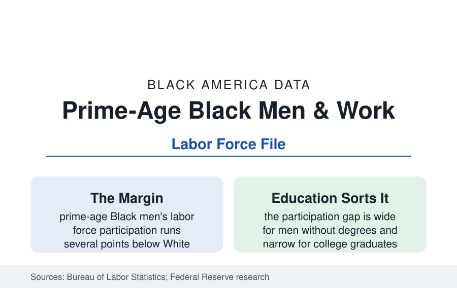

Black Employment
Black Men of Prime Working Age: The Participation File
About one in ten prime-age Black men is out of the labor force entirely — the employment data's most examined margin. The BLS and research data.

Between the unemployment rate and full employment lies the margin where Black men's labor data are most examined: non-participation. Prime-age Black men (25 to 54) participate in the labor force at rates several points below prime-age White men in the Current Population Survey — a gap that persists even in the tightest labor markets, widens in every recession, and decomposes in the research literature into education, health, caregiving, discouragement, and the carceral system's shadow. This article reports the participation file.
The Numbers and Their Shape
The CPS levels frame the inquiry: prime-age men's overall participation has drifted down for decades across groups, with Black men's running persistently lowest among the major groups — in recent editions in the low-to-mid eighties percent against White men's high eighties — and the employment-to-population ratios spreading wider (unemployment's racial multiple compounding the participation gap). The education cross-tab is the file's organizing fact: among college graduates, Black and White prime-age men's participation and employment rates converge to near parity; among men with high school or less, the gaps yawn — the same diploma gradient that structures the whole reference, at maximum amplitude in this one population. Geography compounds it: the legacy-city and Black Belt counties of the other profiles post prime-age Black male employment rates that belong to a different economy than the suburbs forty minutes away, in the county-level ACS data.
The Decomposition: What the Research Assigns
The research literature has spent two decades decomposing the gap, and the reference reports its working components. Health and disability account for a large share — the disability profile's working-age onset data are this file's upstream (a meaningful fraction of non-participating prime-age Black men report disability or illness in the CPS reason codes). The justice system's shadow is the second documented component — not a topic this reference treats elsewhere, but its labor-market arithmetic is in the employment data: the population of men carrying conviction records (millions of men, disproportionately Black, in the Bureau of Justice Statistics' estimates) and the record's employment penalty (the audit studies' callback penalties for records, the occupational licenses closed by statute) suppress measured participation mechanically and behaviorally. Discouragement and joblessness duration form the third — the long-term unemployed exit the counted labor force while remaining, in the alternative measures, willing workers; the Fed's broader U-6-style measures capture part of the margin. Caregiving (for children, parents, and disabled family — the grandparents and disability files' male edge) and school enrollment (small at these ages) round out the CPS's own reason distribution.
The Cycle: Tight Markets as the Experiment
The file's most informative data are cyclical. The late-2010s expansion and the post-pandemic hot labor market ran the experiment the literature prescribed: with unemployment at half-century lows and employers recruiting at the margins (dropping degree screens, softening record checks, raising entry wages), prime-age Black men's participation and employment rose to series highs and the racial gaps narrowed to their smallest recorded — proof, in the Federal Reserve's own conference literature, that a large share of the gap is demand-side and reversible, not a fixed trait of the population. The recessions' data run the film backward faster for Black men than for any other group (last hired, and the participation margin absorbing what unemployment's count cannot hold). The policy translation the economists draw — full employment as the single most powerful instrument in the file — is stated here as the data's own conclusion.
The Institutional Responses in the Data
The intervention ledger is specific: sector-based training programs with randomized evidence (the workforce file's star programs — Year Up, Per Scholas, the healthcare and IT bridges — enroll heavily in this population and post their earnings gains in the evaluation data); record-clearing and fair-chance hiring (whose employment effects the state-level studies track, with the statistical-discrimination side effects the literature debates honestly); child-support arrears reform (the debt-employment trap the family courts' data document); subsidized employment and summer jobs for the youth margin feeding the prime-age years; and the apprenticeship and credential channels of the adult-learner profile. The common thread in the successes is the employer connection — training that ends at a hiring manager — which the evaluations isolate as the active ingredient.
Reading the Participation File
The prime-age margin is where the labor market's racial data stop being about jobs and start being about membership: one in ten of the population's central demographic standing outside the economy's main institution, in patterns that track education, health, and history with mechanical fidelity — and that melt, measurably, whenever the economy runs hot enough to come looking for them. The file's verdict is the Fed's: the men were never the constraint. The demand was.
More in Black Employment
The Black Unemployment Rate: The Two-to-One Pattern
Black unemployment runs at roughly twice the White rate — 5.5 percent against 3.3 percent in annual averages — a ratio stable across five decades of federal data. How it is measured and why it persists.
Black Median Weekly Earnings: The 80-Cent Ratio
Black full-time workers earn a median of about $900 a week — roughly 80 cents for every dollar White workers earn. The BLS earnings data by group, gender, and occupation.
Black Labor Force Participation: Working at National Rates
Black labor force participation runs at roughly the national rate — and Black women participate at higher rates than White women. The BLS participation data.
Source: U.S. Bureau of Labor Statistics, Current Population Survey; Federal Reserve and academic labor research (Neal; Congressional Budget Office analyses); Census Bureau American Community Survey.